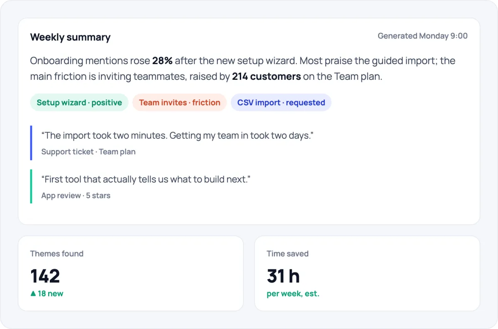

Every customer deserves to be heard
Not just the loudest ones. Signalry gives a quiet app review the same weight as an angry escalation.
Signalry started with a simple question: why does it take a churned customer for a team to hear a problem everyone already mentioned?
In 2021 our founders ran product and support at a fast-growing SaaS company. They had thousands of tickets, three survey tools and a spreadsheet nobody trusted.
So they built a tool that read everything, grouped it into themes and sent a short summary every Monday. Within a quarter, churn fell by a third. Other teams asked to use it, and Signalry was born.
Today more than 2,400 teams use Signalry to decide what to fix, what to build and who to thank.

Not just the loudest ones. Signalry gives a quiet app review the same weight as an angry escalation.
Every theme comes with how many customers mentioned it and what they’re worth, so decisions are easy to defend.
We never train shared models on customer data, and you choose where it lives. Trust is the product.
Co-founder & CEO
Co-founder & CTO
VP Customer Success
Head of AI
Book a 30-minute demo with the team that built Signalry.
We reply within one working day.